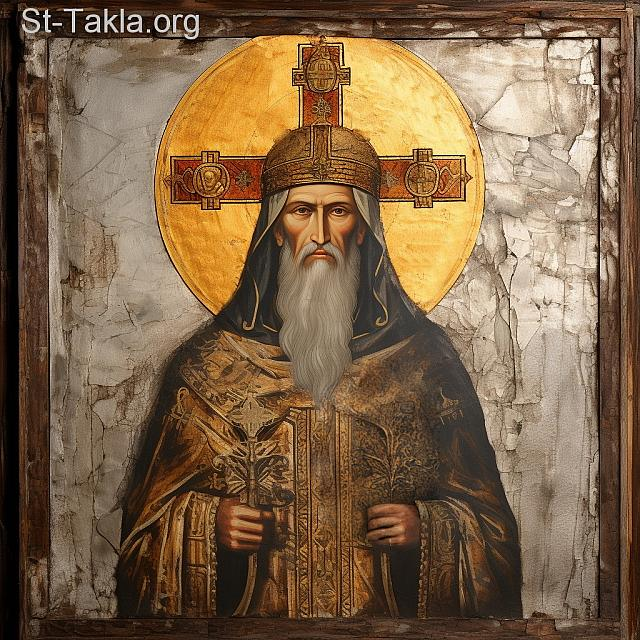

الاسم: ياروكلاس
رقم البطريرك: الثالث عشر
مدة البطريركية: من سنة 230م إلى سنة 246م
المدينة: الإسكندرية، مصر
الخلف: البابا ديمتريوس الأول الكرام
السلف: البابا ديونسيوس
كان القديس ياروكلاس من رجال الكنيسة المعروفين بالتقوى والفضيلة، وقد عاش منذ شبابه في حياة الصلاة والنسك وخدمة الكنيسة.
وكان محبًا للعلم والمعرفة، ومتمسكًا بتعاليم الكنيسة وإيمانها المستقيم.
وقد ظهرت فضائله بين المؤمنين، فأصبح من الشخصيات المحبوبة والمعروفة في كنيسة الإسكندرية.
خدم القديس ياروكلاس في الكنيسة قبل أن يصبح بطريركًا، وكان من تلاميذ ومعاوني البابا ديمتريوس الأول الكرام.
وقد اشتهر بحسن التعليم وبقدرته على شرح الإيمان المسيحي، كما كان يهتم بتثبيت المؤمنين في تعاليم الكنيسة.
وكان الشعب يقدّر حياته الروحية وعلمه وتقواه.
بعد نياحة البابا ديمتريوس الأول الكرام، اجتمع الإكليروس والشعب لاختيار راعٍ جديد للكنيسة المرقسية.
واتفق الجميع على اختيار القديس ياروكلاس، لما كان معروفًا عنه من الفضيلة والعلم والاستقامة.
وهكذا صار البابا ياروكلاس البطريرك الثالث عشر على كرسي القديس مار مرقس الرسول.
وقد تولى رعاية الكنيسة في فترة مهمة من تاريخ المسيحية في الإسكندرية.
اهتم البابا ياروكلاس اهتمامًا كبيرًا بالتعليم المسيحي، فكان يعلّم الشعب أصول الإيمان، ويشرح لهم الكتب المقدسة، ويحثهم على حياة التوبة والفضيلة.
كما اهتم بتعليم رجال الإكليروس وإعدادهم للخدمة، لأن الكنيسة كانت تحتاج إلى خدام قادرين على تعليم الشعب والدفاع عن الإيمان.
وكان يرى أن التعليم الصحيح هو أساس ثبات الكنيسة، لذلك بذل جهدًا كبيرًا في نشر المعرفة المسيحية بين المؤمنين.
كان للبابا ياروكلاس اهتمام خاص بمدرسة الإسكندرية اللاهوتية، التي كانت من أهم مراكز التعليم المسيحي في العالم القديم.
وقد ساعد على استمرار التعليم اللاهوتي والعلمي في الكنيسة، واهتم بالعلماء والمعلمين الذين يخدمون في مجال التعليم.
وكانت مدرسة الإسكندرية في ذلك الوقت مركزًا مهمًا لدراسة الكتاب المقدس والعلوم المسيحية والفلسفة.
وقد كان البابا ياروكلاس حريصًا على أن يكون التعليم مرتبطًا بالإيمان الصحيح وتعاليم الكنيسة.
كان من تلاميذ البابا ياروكلاس القديس ديونيسيوس، الذي أصبح فيما بعد البابا الرابع عشر على الكرسي المرقسي.
وقد اهتم البابا ياروكلاس بتعليم تلاميذه وتدريبهم على خدمة الكنيسة.
وكان القديس ديونيسيوس من أبرز تلاميذه، وقد استفاد كثيرًا من تعليمه وحياته الروحية.
وبعد نياحة البابا ياروكلاس، صار القديس ديونيسيوس خليفته على الكرسي المرقسي.
كان البابا ياروكلاس راعيًا أمينًا لشعبه، يهتم بالفقراء والمحتاجين، ويشجع المؤمنين على المحبة والتعاون.
وكان يزور المؤمنين ويشجعهم في الضيقات، ويحثهم على التمسك بالإيمان مهما كانت الصعوبات.
كما كان يهتم بأن تكون حياة الكنيسة قائمة على الصلاة والمحبة والتعليم.
عاش البابا ياروكلاس حياة مليئة بالصلاة والتقوى، وكان مثالًا للراعي الذي يهتم بخلاص نفسه وخلاص شعبه.
وكان معروفًا بالوداعة والاتضاع، ولم يكن يسعى إلى المجد الشخصي، بل كان يعتبر نفسه خادمًا للكنيسة ولشعب الله.
وقد جمع بين العلم والحياة الروحية، فكان عالمًا في الإيمان ومجاهدًا في الصلاة.
استمرت خدمة البابا ياروكلاس على الكرسي المرقسي حوالي ستة عشر عامًا، من سنة 230م إلى سنة 246م.
وخلال هذه الفترة اهتم بتثبيت الكنيسة في الإيمان، ونشر التعليم، ورعاية المؤمنين.
كما عمل على استمرار التقليد الكنسي والتعليم الأرثوذكسي الذي تسلمته الكنيسة من الآباء السابقين.
بعد أن قضى البابا ياروكلاس سنوات طويلة في خدمة الكنيسة ورعاية شعبها، تنيح بسلام سنة 246م.
وبعد نياحته اجتمع الشعب والإكليروس واختاروا تلميذه القديس ديونيسيوس ليخلفه على الكرسي المرقسي.
وهكذا انتقلت خدمة الكنيسة إلى تلميذه الذي صار فيما بعد من أعظم بطاركة الإسكندرية.
بركة صلواته تكون معنا جميعًا. آمين.